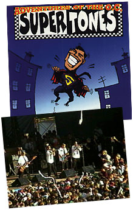
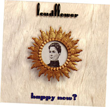
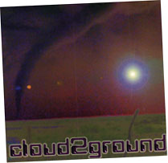

{kind=link}
 |
| Cornerstone: Welcome!
It's more than a music party -- Tucked behind the underground tent is Cornerstone's ArtRageous and Imaginarium exhibits. Authors, painters, and others of a creative bent can enjoy conferences, discussion, and great coffee. The midnight film festival was cool, too...
Best Finds of the Fest So much music, so little time... Sob! Here's a peek at some of the cool stuff I stumbled across over the course of the festival. Some oldies and some fresh stuff -- no matter what the genre, it's hot stuff.
Follow the adventures of Squeaky the Duck on his adventures at the fest. From his near-death experience at the hands of Kevin131 to a DC Talk sighting, he's been almost everywhere.
Well, T-shirts, too. Cornerstone is a great place to find a variety of wacky hairstyles, and most of the owners are good natured sorts who're quite willing to offer their coifs for a good cause -- this page, for one!
What do you get when you put a bunch of music-obsessed usenet junkies in one place? Vibrating hairrushes. That's what. The fourth annual RMC Cornerstone picnic is here, captured in bits and bytes for all of posterity...
Whether it's beating the heat, finding munchies, or selecting that perfect camping site, there's someone who's been through it and has some words of wisdom to offer. Recorded here for posterity are essential Cornerstone survival skills.
|
The Orange County Supertones
OK, OK, so they're not exactly newcomers... and after the reception that the Supertones got at this year's fest, admitting that I just 'discovered' them made some friends wonder what cave I had been hiding in for the past year. Self-abasement aside, if you're looking for bouncy, happy ska, the Supertones have got it. Jason and I hung out while they warmed up for their mainstage concert, then enjoy the show itself from the mainstage hill. The Supertones' self-titled first release is the one I picked up later that week, and it's been in my CD rotation ever since. Their second release, Supertones Strike Back, came out a few weeks before Cstone but I haven't had a chance to give it a listen yet... Here's hoping it lives up to the original!
Late Thursday morning, heading back to the Sub*Lime trailer for a respite from the rain, I stumbled across the crew from Grey Dot Records busily unpacking boxes of squeaky-clean CDs. Woohoo! I'd met them at last year's fest, when they were wandering the crowds wearing "Ask Me For a Free CD!" T-shirts. Perhaps my tastes have changed in three hundred and sixty-some odd days, or perhaps Grey Dot's lineup has solidified. Either way, I was pleasantly suprised by the quality of the stuff spread out on the table. With punk, folk, re-issues of classic 80's rock, and new power-pop releases spread out before me, it was obviously time to pick up some new tunes. One of Grey Dot's latest artists -- Loudflower -- instantly won my heart. Locally famous in the Atlanta area, they've been together for three years or so, opening for groups like Hootie and the Blowfish, Squirrel Nut Zippers, and a number of other big names. The music is moody, melodic rock with a lot of 'body' -- thanks to a smooth horns section that's always there in the background. My only regret is that I waited to get back to the motel before listening to it -- it would've made those drizzle-soaked hours more pleasant! It's been said that Bathtub Mary is what Christian music will sound like in five years. The band's sound is beyond unique, with slide whistles, guitar solos, quirky female vocals, and wild lyrical contortions that take in Calvin and Hobbes, Alice in Wonderland, and a bucketfull of wit. I got a chance to talk to most of the band on Saturday night and Sunday morning, and they're a friendly, offbeat bunch with a van stacked full of demos. They'd been touring and playing for almost three years, but their official release wasn't out yet during the fest. It's finally hit the streets now, and more info is available on their home page. Check it out! "What the heck is Cloud 2 Ground?" A question that I never should've asked. A last-minute addition to the N*Soul Dance Tent's lineup, this 'Group' -- a single techno virtuoso from Penysylvania -- came out of the blue... a real treat for techno-heads looking for something fresh and creative. Only 500 copies of Cloud2Ground's self-titled indie CD exist, and the last of the batch were being sold off at the fest. The group's label debut on N*Soul records, just released, is all new material, leaving the indy version scrumptiously rare.
Le sigh. If only I'd known about Plumb earlier in the 'fest, I would have jumped at the chance to hear them live. But the day they played at the encore stage, they were just another of the dozens of bands I'd never heard of. Later, I heard from Ed Rock and other RMC denizens that it was one of the best modern rock releases of the year. Lead singer Tiffany Arbuckle belts out punchy lyrics and drops back to a whisper for great balads on the odd tracks, too. With a great band, including JJ of Sixpence None The Richer, the CD is hot. Jason and I caught the tail end of Plumb doing a great cover of Peter Gabriel's In Your Eyes, but alas... that was all we saw. Next time, I'll pay more attention! |
|